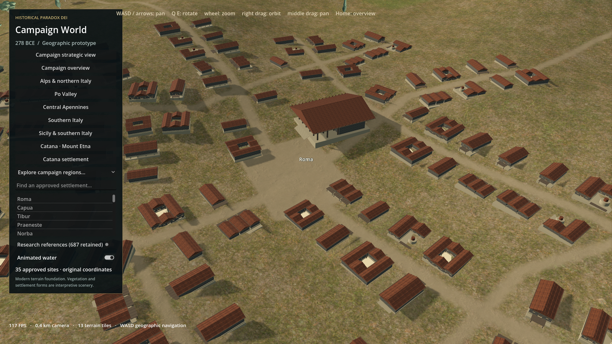
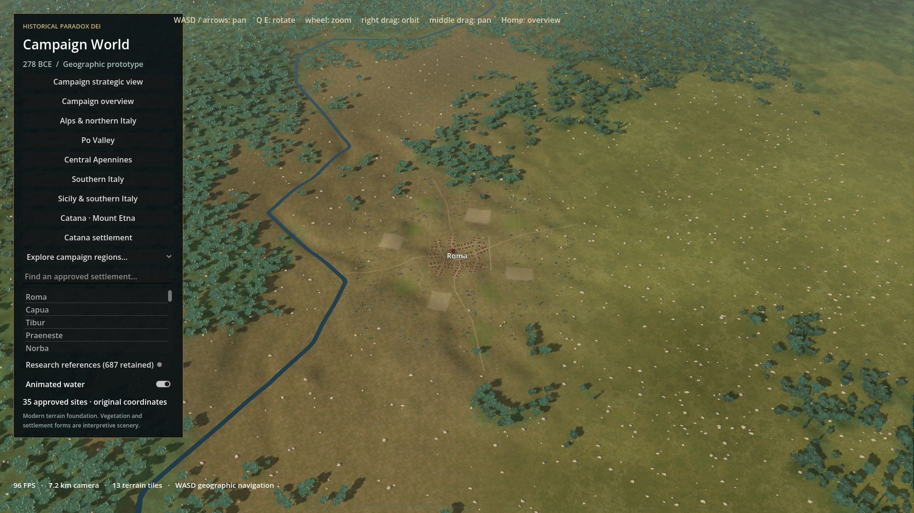
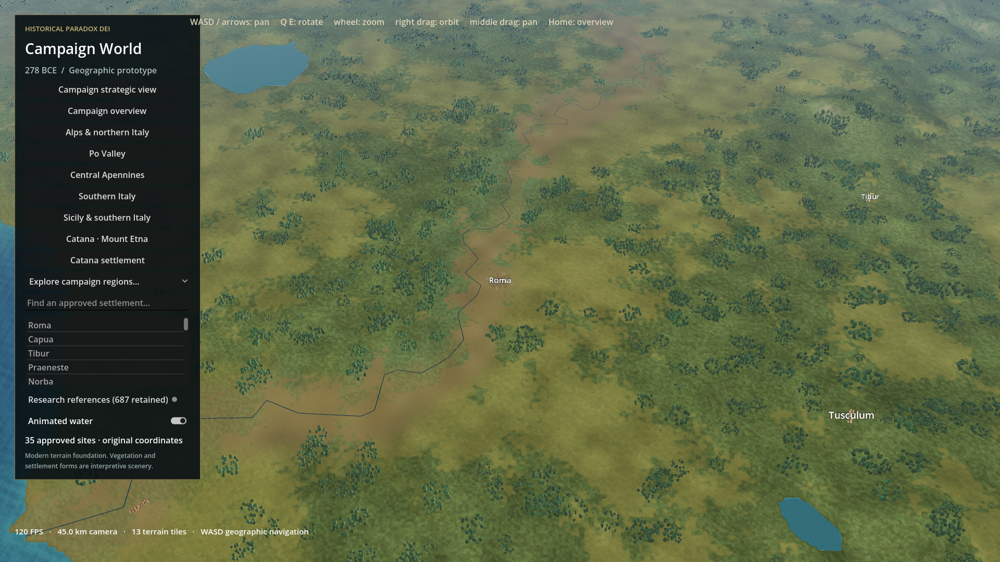
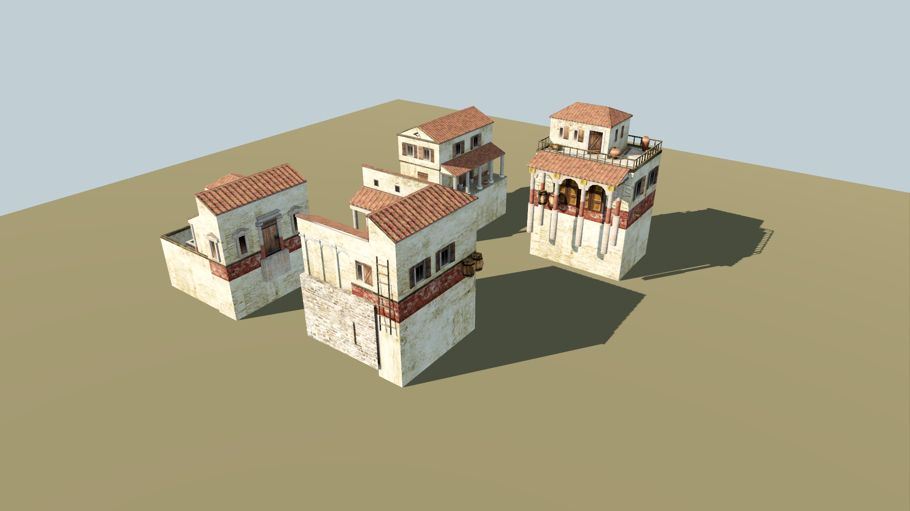

HISTORICAL PARADOX DEI • 28 OCTOBER 2026
Roma visual quality reset
Showcase not delivered. Artistic acceptance not demonstrated.Rendering audit, fresh baseline evidence and a rejected asset import test. The campaign scene was left unchanged at the asset-quality gate. These pairs are baseline recaptures; they must not be represented as an overhaul.
Full audit and stop reasonSources and licensesRaw frame samplesNavigationValidation
Current baseline performance • RTX 3060 Laptop / 1920×1080
| View | Average FPS | 1% low | Worst settled | Draw calls |
|---|
| close | 115.8 | 95.2 | 11.58 ms | 492 |
| regional | 95.4 | 70.7 | 21.79 ms | 643 |
| strategic | 120.0 | 117.3 | 8.69 ms | 229 |
600 settled samples per view, same process; wall-clock frames include presentation and scheduling. First loading has a 275 ms stall. Warm navigation: 98.1 average / 55.5 FPS 1% low, below the 60 FPS low-end target. No replacement-scene comparison is available.
close baseline • 0.42 km
Exact camera match: position, distance, pitch, yaw and 42° FOV. No after scene exists.
 Earlier campaign baseline
Earlier campaign baseline
Fresh baseline recapture • unchanged artregional baseline • 7.2 km
Exact camera match: position, distance, pitch, yaw and 42° FOV. No after scene exists.
 Earlier campaign baseline
Earlier campaign baseline
Fresh baseline recapture • unchanged artstrategic baseline • 45 km
Exact camera match: position, distance, pitch, yaw and 42° FOV. No after scene exists.
 Earlier campaign baseline
Earlier campaign baseline
Fresh baseline recapture • unchanged artRejected architecture import evaluation
Four 0 A.D. base house meshes, actually rendered by Godot in a separate inspection scene. These improve silhouette variety but were not established as a sufficiently modern, period-suitable art kit. Material behavior is approximated; this is not the complete original actor or a Roma after screenshot.

Geometry, textures and adapted render: Wildfire Games and 0 A.D. contributors, CC BY-SA 3.0. Static extraction, coordinate/UV conversion, triangulation and inspection materials by this experiment. Upstream license • Source URLs and hashes
Protected validation: 460 source files unchanged; 35 exact settlement coordinates; 687 retained research records. These checks do not establish visual success. No commits, pushes, gameplay changes, The Rev edits or global asset expansion.